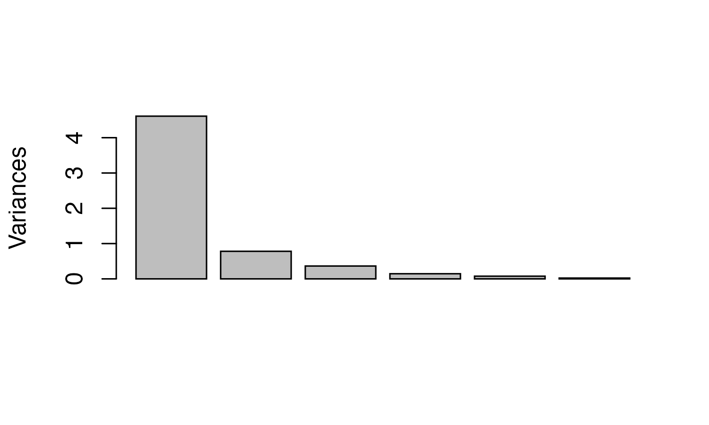
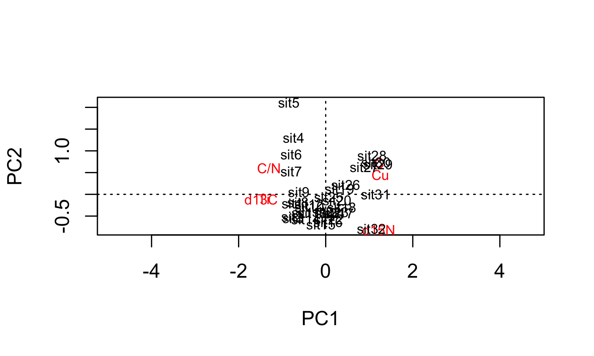
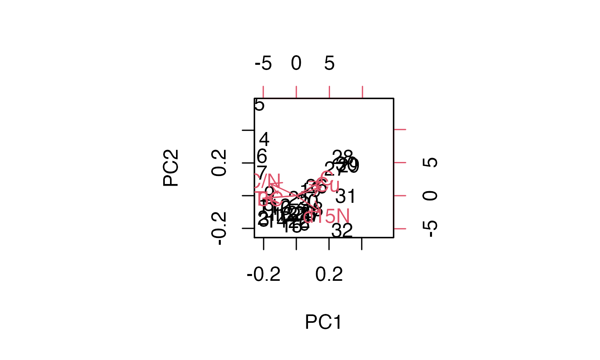

vignettes/nested_analysis.Rmd
nested_analysis.RmdLoad the packages:
Preparing the data:
alta_lake_geochem
#> # A tibble: 192 x 9
#> location param depth age value stdev units n zone
#> <chr> <chr> <dbl> <dbl> <dbl> <dbl> <chr> <int> <chr>
#> 1 ALGC2 Cu 0.25 2015. 76 NA ppm 1 Zone 3
#> 2 ALGC2 Cu 0.75 2011. 108. 4.50 ppm 3 Zone 3
#> 3 ALGC2 Cu 1.25 2008. 158 NA ppm 1 Zone 3
#> 4 ALGC2 Cu 1.75 2003. 169 NA ppm 1 Zone 3
#> 5 ALGC2 Cu 2.5 1998. 161 NA ppm 1 Zone 3
#> 6 ALGC2 Cu 3.5 1982. 129 NA ppm 1 Zone 3
#> 7 ALGC2 Cu 4.5 1966. 88.7 3.86 ppm 3 Zone 2
#> 8 ALGC2 Cu 5.5 1947. 65 NA ppm 1 Zone 2
#> 9 ALGC2 Cu 6.5 1922. 62.3 9.53 ppm 3 Zone 2
#> 10 ALGC2 Cu 7.5 1896. 48 NA ppm 1 Zone 2
#> # … with 182 more rows
alta_nested <- nested_data(
alta_lake_geochem,
qualifiers = c(age, depth, zone),
key = param,
value = value,
trans = scale
)
alta_nested
#> # A tibble: 1 x 4
#> discarded_columns discarded_rows qualifiers data
#> * <list> <list> <list> <list>
#> 1 <tibble [32 × 0]> <tibble [0 × 9]> <tibble [32 × 4]> <tibble [32 × 6]>
alta_nested %>% unnested_data(data)
#> # A tibble: 32 x 6
#> C[,1] `C/N`[,1] Cu[,1] d13C[,1] d15N[,1] Ti[,1]
#> <dbl> <dbl> <dbl> <dbl> <dbl> <dbl>
#> 1 -1.54 1.26 -0.794 1.03 -0.670 0.807
#> 2 -1.59 1.36 -0.559 1.19 0.0499 1.33
#> 3 -1.98 0.960 -0.721 1.10 -0.511 0.682
#> 4 -0.189 1.61 -0.749 0.836 -2.37 0.233
#> 5 0.993 2.48 -0.694 1.06 -2.55 0.908
#> 6 -0.157 1.76 -0.712 1.17 -1.52 0.941
#> 7 -0.642 1.36 -0.667 1.07 -1.39 1.14
#> 8 -1.07 0.924 -0.559 0.820 -0.439 1.16
#> 9 -0.722 0.696 -0.830 0.765 -0.929 0.932
#> 10 -0.631 0.309 -0.504 0.409 -0.166 0.882
#> # … with 22 more rows
alta_nested %>% unnested_data(qualifiers, data)
#> # A tibble: 32 x 10
#> age depth zone row_number C[,1] `C/N`[,1] Cu[,1] d13C[,1] d15N[,1] Ti[,1]
#> <dbl> <dbl> <chr> <int> <dbl> <dbl> <dbl> <dbl> <dbl> <dbl>
#> 1 1550 29.5 Zone… 1 -1.54 1.26 -0.794 1.03 -0.670 0.807
#> 2 1566. 28.5 Zone… 2 -1.59 1.36 -0.559 1.19 0.0499 1.33
#> 3 1581. 27.5 Zone… 3 -1.98 0.960 -0.721 1.10 -0.511 0.682
#> 4 1597. 26.5 Zone… 4 -0.189 1.61 -0.749 0.836 -2.37 0.233
#> 5 1613. 25.5 Zone… 5 0.993 2.48 -0.694 1.06 -2.55 0.908
#> 6 1629. 24.5 Zone… 6 -0.157 1.76 -0.712 1.17 -1.52 0.941
#> 7 1644. 23.5 Zone… 7 -0.642 1.36 -0.667 1.07 -1.39 1.14
#> 8 1660. 22.5 Zone… 8 -1.07 0.924 -0.559 0.820 -0.439 1.16
#> 9 1676. 21.5 Zone… 9 -0.722 0.696 -0.830 0.765 -0.929 0.932
#> 10 1692. 20.5 Zone… 10 -0.631 0.309 -0.504 0.409 -0.166 0.882
#> # … with 22 more rows
pca <- alta_nested %>% nested_prcomp()
pca
#> # A tibble: 1 x 8
#> discarded_columns discarded_rows qualifiers data model variance loadings
#> * <list> <list> <list> <list> <lis> <list> <list>
#> 1 <tibble [32 × 0]> <tibble [0 × 9… <tibble [3… <tibb… <prc… <tibble … <tibble …
#> # … with 1 more variable: scores <list>
plot(pca)
pca %>% unnested_data(qualifiers, scores)
#> # A tibble: 32 x 10
#> age depth zone row_number PC1 PC2 PC3 PC4 PC5 PC6
#> <dbl> <dbl> <chr> <int> <dbl> <dbl> <dbl> <dbl> <dbl> <dbl>
#> 1 1550 29.5 Zone 1 1 -2.48 -0.273 0.409 0.518 0.316 -0.0538
#> 2 1566. 28.5 Zone 1 2 -2.48 -0.675 0.902 0.561 -0.364 -0.190
#> 3 1581. 27.5 Zone 1 3 -2.41 -0.721 0.576 0.465 0.619 -0.184
#> 4 1597. 26.5 Zone 1 4 -2.39 1.73 -0.527 0.197 0.742 0.0656
#> 5 1613. 25.5 Zone 1 5 -2.73 2.82 -0.666 0.212 -0.432 0.0715
#> 6 1629. 24.5 Zone 1 6 -2.56 1.22 -0.155 0.235 -0.208 -0.105
#> 7 1644. 23.5 Zone 1 7 -2.57 0.708 0.123 -0.0210 -0.0114 0.0286
#> 8 1660. 22.5 Zone 1 8 -2.04 -0.243 0.490 0.101 -0.157 0.0834
#> 9 1676. 21.5 Zone 1 9 -1.98 0.0702 -0.0657 -0.147 0.0813 0.186
#> 10 1692. 20.5 Zone 1 10 -1.20 -0.376 0.202 -0.132 -0.202 0.220
#> # … with 22 more rows
pca %>% unnested_data(variance)
#> # A tibble: 6 x 6
#> component component_text standard_deviation variance variance_proportion
#> <int> <chr> <dbl> <dbl> <dbl>
#> 1 1 PC1 2.15 4.61 0.768
#> 2 2 PC2 0.884 0.781 0.130
#> 3 3 PC3 0.603 0.364 0.0607
#> 4 4 PC4 0.381 0.145 0.0242
#> 5 5 PC5 0.276 0.0761 0.0127
#> 6 6 PC6 0.151 0.0228 0.00380
#> # … with 1 more variable: variance_proportion_cumulative <dbl>
pca %>% unnested_data(loadings)
#> # A tibble: 6 x 7
#> variable PC1 PC2 PC3 PC4 PC5 PC6
#> <chr> <dbl> <dbl> <dbl> <dbl> <dbl> <dbl>
#> 1 C 0.380 0.540 -0.460 -0.162 -0.567 -0.0718
#> 2 C/N -0.401 0.451 0.207 0.735 -0.223 0.0408
#> 3 Cu 0.387 0.340 0.760 -0.173 0.0609 -0.352
#> 4 d13C -0.458 -0.0890 -0.144 -0.145 -0.126 -0.851
#> 5 d15N 0.377 -0.613 0.144 0.386 -0.539 -0.149
#> 6 Ti -0.439 -0.0783 0.356 -0.483 -0.565 0.350
keji_nested <- keji_lakes_plottable %>%
group_by(location) %>%
nested_data(qualifiers = depth, key = taxon, value = rel_abund)
keji_nested %>% unnested_data(qualifiers, data)
#> # A tibble: 37 x 9
#> location depth row_number `Asterionella r… `Aulacoseira di… `Aulacoseira li…
#> <chr> <dbl> <int> <dbl> <dbl> <dbl>
#> 1 Beaversk… 0.125 1 0 3.02 1.72
#> 2 Beaversk… 0.375 2 0 3.25 2.03
#> 3 Beaversk… 0.825 3 1.32 0 2.32
#> 4 Beaversk… 2.12 4 0.333 0 2.67
#> 5 Beaversk… 3.12 5 0 0 5.32
#> 6 Beaversk… 4.12 6 0 0 3.54
#> 7 Beaversk… 5.38 7 0.987 0 10.2
#> 8 Beaversk… 6.38 8 0.993 0 8.94
#> 9 Beaversk… 7.62 9 1.63 0 8.82
#> 10 Beaversk… 9.12 10 0.328 0 10.8
#> # … with 27 more rows, and 3 more variables: Cyclotella stelligera <dbl>,
#> # Tabellaria flocculosa (strain III) <dbl>, Other <dbl>
coniss <- keji_nested %>%
nested_chclust_coniss()
plot(coniss, main = location)
plot(coniss, main = location, xvar = qualifiers$depth, labels = "")
coniss %>% select(location, zone_info) %>% unnest(zone_info)
#> # A tibble: 4 x 12
#> location hclust_zone min_depth max_depth first_depth last_depth min_row_number
#> <chr> <int> <dbl> <dbl> <dbl> <dbl> <dbl>
#> 1 Beavers… 1 0.125 4.12 0.125 4.12 1
#> 2 Beavers… 2 5.38 23.4 5.38 23.4 7
#> 3 Peskawa… 1 0.125 5.12 0.125 5.12 1
#> 4 Peskawa… 2 6.38 35.1 6.38 35.1 6
#> # … with 5 more variables: max_row_number <dbl>, first_row_number <dbl>,
#> # last_row_number <dbl>, boundary_depth <dbl>, boundary_row_number <dbl>
keji_nested %>%
nested_chclust_coniss(n_groups = c(3, 2)) %>%
select(location, zone_info) %>%
unnested_data(zone_info)
#> # A tibble: 5 x 12
#> location hclust_zone min_depth max_depth first_depth last_depth min_row_number
#> <chr> <int> <dbl> <dbl> <dbl> <dbl> <dbl>
#> 1 Beavers… 1 0.125 4.12 0.125 4.12 1
#> 2 Beavers… 2 5.38 13.6 5.38 13.6 7
#> 3 Beavers… 3 15.1 23.4 15.1 23.4 14
#> 4 Peskawa… 1 0.125 5.12 0.125 5.12 1
#> 5 Peskawa… 2 6.38 35.1 6.38 35.1 6
#> # … with 5 more variables: max_row_number <dbl>, first_row_number <dbl>,
#> # last_row_number <dbl>, boundary_depth <dbl>, boundary_row_number <dbl>
halifax_nested <- halifax_lakes_plottable %>%
nested_data(c(location, sample_type), taxon, rel_abund, fill = 0)
halifax_nested %>% unnested_data(qualifiers, data)
#> # A tibble: 20 x 9
#> location sample_type row_number `Aulacoseira distan… `Eunotia exigua`
#> <chr> <chr> <int> <dbl> <dbl>
#> 1 Anderson Lake bottom 1 4.65 2.42
#> 2 Anderson Lake top 2 1.87 0
#> 3 Bayers bottom 3 11.6 5.71
#> 4 Bayers top 4 0.993 6.81
#> 5 Bell Lake bottom 5 0.476 2.62
#> 6 Bell Lake top 6 9.22 0.432
#> 7 Cranberry Lake bottom 7 0 9.17
#> 8 Cranberry Lake top 8 0 7.72
#> 9 Frasers Lake bottom 9 6.42 0.714
#> 10 Frasers Lake top 10 4.85 0
#> 11 Kinsac lake bottom 11 11.3 8.33
#> 12 Kinsac lake top 12 0 3.85
#> 13 Little Albro La… bottom 13 2.34 2.34
#> 14 Little Albro La… top 14 5.78 2.61
#> 15 Little Springfi… bottom 15 12.1 2.64
#> 16 Little Springfi… top 16 0 19.8
#> 17 Maynard Lake bottom 17 9.75 4
#> 18 Maynard Lake top 18 2.98 1.23
#> 19 Miller Lake bottom 19 1.79 2.19
#> 20 Miller Lake top 20 0.816 4.35
#> # … with 4 more variables: Fragilariforma exigua <dbl>,
#> # Tabellaria fenestrata <dbl>, Tabellaria flocculosa (strain IV) <dbl>,
#> # Other <dbl>
hclust <- halifax_nested %>%
nested_hclust(method = "average")
plot(hclust, labels = glue::glue("{qualifiers$location} ({qualifiers$sample_type})"))
alta_nested %>%
nested_analysis(vegan::rda, data) %>%
plot()
biplot(pca)